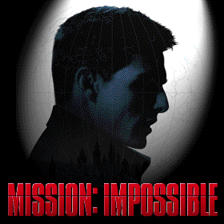
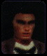

|

SOLUCE EVOLUTIVE
La vie d'espion n'est pas une partie de
plaisir... Certains même se font refoidir dès leur débuts.
Cette solution s'adresse donc aux agents en herbe, à tous ceux qui
sont perdus dans les complications et les pièges que recèle
Mission Impossible.

Précisions
Dans de nombreuses missions, vous devrez
respecter l'ordre des objectifs. Il arrive même que vous n'ayiez
pas le choix. En revanche, dans certaines, l'ordre aura peu d'importance.
Du coup, je vous propose l'ordre qui me paraît le plus approprié,
mais rien ne vous oblige à le respecter.
Les six
commandements
Quelle que soit votre mission, suivez bien
ces conseils avisés. Ils vous seront utiles tout au long de l'aventure.
C'est un point important si vous ne voulez pas finir votre carrière
plus tôt que prévu.
Les voici:
TU
NE TIRERA PAS A TOUT BOUT DE CHAMP
Vous êtes un
agent secret, et si vous vous faîtes repérer, le département
d'état niera avoir eu connaissance de vos agissements. Alors tâchez
de rester discret. Sortir votre flingue pour faire un carton vous démange?
Retenez-vous, sauf si c'est indispensable. Par ailleurs, assurez-vous qu'il
n'y a pas de gardes aux alentours lorsque vous commettez quelque mauvaise
action.
TU
VISERAS PLUTOT LA TETE
En visant bien, vous
n'aurez besoin de tirer qu'une seule fois.
Histoire de ne pas
gâcher vos points de vie et vos munitions.
TU
NE TRAVAILLERA PAS POUR TON COMPTE
Même si vous
vous sentez souvent seul, n'oubliez pas que vous oeuvrez en équipe.
Obéissez aux
ordres qui vous sont donnés et ne laissez pas vos coéquipiers
dans l'embarras.
TU
PRENDRAS DES NOTES
Avancez à petits
pas et essayez de bien vous souvenir de ce que vous avez fait. Si vous
échouez, il vous faudra tout recommencer, alors ne tombez pas deux
fois dans le même piège.
TU
CHANGERAS DE VISAGE
Le facemaker sert
souvent. Lorsque vous l'utilisez et subtilisez l'identité d'une
personne, il faut absolument ranger votre arme(sélctionnez le poing).
Autrement, les gardes pensent que vous devenez fou et vous arrêtent
aussi sec.
TU
NE TOMBERAS POINT DE HAUT
Méfiance lorsque
vous sautez d'un point surélevé. Selon la hauteur, vous risquez
de perdre sottement quelque points de vie, par ailleurs si précieux.
ORGANISATION
Le jeu est découpé
en missions, elles-mêmes scindées en sous-missions. Le nombre
de sous-missions varie selon les missions (ce qui nous fait pas mal de
"missions" en deux phrases !). Lorsque vous êtes arrêté
ou tué, vous recommencez la sous-mission au début (agaçant,
n'est-ce pas?). De même, une sous-mission se solde par un échec
si vous n'avez pas rempli tous les objetcifs(agaçant aussi, non?).
Deux modes de difficultés
sont proposés:
ET
En mode impossible(on
vous le dit parce que vous ne le devinerez jamais), la difficulté
est la plus élevée. Terminez le jeu dans ces deux modes donne
droit à une partie surprise. Mais nous n'en sommes pas encore là.
Le message vient de s'autodétruire, vous disposez de vos premières
instructions. En route!
SOLUTION
Les explications des
missions sont pour les modes possible(rouge)
et impossible(jaune)
Lundkwist
Cette première
mission, divisée en deux parties, permet de se familiariser avec
le métier d'agent spécial. Si elle ne présente pas
de difficulté majeure, certains risquent tout de même de se
perdre, la logique du jeu étant un peu particulière. Attention,
ça commence! :)
Objectifs:
1. Obtenir
une nouvelle identité.
En début de
mission, un bâteau vous dépose sur le quai d'une base. Première
observation: il va s'agir de ne pas faire de vieux os dans le coin, on
caille méchamment ici. Commencez donc par vous entraîner à
faire bouger Ethan pour le réchauffer un peu. Une fois ces mouvements
acquis, dirigez-vous à droite et sautez sur les caisses. Une fois
en haut de la pile, sautez par dessus le grillage.
Vous êtes maintenant
à l'intérieur de la base. Faîtes en sorte de ne pas
vous faire repérer par les gardes avant d'arriver à la baraque
de gauche. Phelps vous indiquera son emplacement exact par un point rouge
sur votre radar. Devbant la porte de la cabane, dégainez avant d'entrer,
et refroidissez le colonel avant qu'il n'ait le temps de dire "ouf"...
ou d'appeler la garde.
Lorsqu'il est au sol,
approchez-vous de lui et utilisez le facemaker
pour prendre son apparence,
puis rangez votre arme.
2. Voler
le leurre qui dupera Boris
Avant de sortir, regardez
sur le bureau, il y a une lettre: prenez-la. Il s'agis d'un laisser passer
qui permet de sortir du camp sans encombres.
3.Passer
le contrôle en douceur
Dirigez-vous vers la gauche en sortant, puis
à droite vers le camion. Vous croisez un garde, qui se prénomme
Boris et tourne autour du camion. Donnez-lui la fameuse lettre que vous
avez dérobée, il montera dans le camion. A ce moment là,
pas de temps à perdre. Dirigez-vous rapidement vers l'arrière
du camion et montez(en appuyant sur A). Clutter vous rejoint et vous partez
ensemble vers Subpen.
Mission
Impossible: Détruire la centrale
Après avoir
changé d'identité, juste en sortant de la cabance, n'allez
pas vers Boris tout de suite. Partez vers la gauche et passez devant la
sentinelle. Une fois devant la centrale, tirez à trois reprises
à gauche puis à droite(soit six fois en tout!)pour la détruire.
Attention, à aucun moment le garde qui fait sa ronde ne doit vous
voir... Il vous arrêterait aussitot. Par ailleurs, vous disposez
de peu de munitions. Dès que vous en avez terminé avec la
centrale, allez voir Boris, donnez-lui la lettre...
Base
Sous-Marin
Objectifs:
1. Récupérer
les mines magnétiques
Il fait le même
temps que lors de votre mission précédente: froid. Le masque
qui vous servait à ne pas vous faire repérer tombe en lambeaux...Et
vous reprenez votre allure initiale. Bref, les gardes vous tirent dessus
dès qu'ils vous aperçoivent. Ne cherchez pas l'affrontement,
ils sont bien trop nombreux pour vous. Dirigez-vous plutôt discrètement
vers l'entrepôt à gauche où vous trouverez les mines.
Le bâtiment correspond au point rouge sur votre radar. Entrez et
suivez le couloir.
Au bout se trouve
une pièce avec des étagères, et sur ces étagères,
les fameuses mines.
Prenez-les, faîtes
demi-tour et quittez l'entrepôt.
2.Donner
une mine à Clutter
Il faut maintenant
trouver Clutter pour lui donner les charges explosives. Pour celà,
suivez le point vert sur votre radar. En évitant les gardes. S'il
vous arrivait d'avoir à tirer, visez juste pour ne pas vous retrouver
à court de munitions.
3.Saboter
le patrouilleur
Clutter prend une
mine et vous en laisse une. Un objectif supplémentaire s'joute alors
à votre mission. Il s'agit de saboter le patrouilleur avant de rejoindre
Dowey. Celà tombe bien, il vous reste une mine. Pour trouver le
bateau à couler pas de problèmes: Phelps le représente
par un point blanc sur votre radar. Une fois de plus, il vous faudra agir
avec discétion pour ne pas vous faire repérer par les gardes.
Ce coup-ci en revanche, il n'y a pas d'alternative: il faut se débarrasser
de certains d'entre eux pour libérer l'accès. Repérez-vous
grâce au point blanc et, lorsque vous serez à
proximité du
bâteau, placez une mine dessus.
4.Rejoindre
Dowey pour l'évasion
Rejoindre Dowey: Ensuite, on speede un peu.
Remontez la rampe en tirant à vue sur tout ce qui bouge. Parvenu
en haut, partez vers la droite, vous découvrirez une échelle(le
point vert sert une nouvelle fois de repère). Il suffit de descendre
pour trouver Dowey qui vous attend en
bas dans un bâteau(pas saboté
celui-là). Mission accomplie.
Mission
Impossible: Rien à signaler
Aucun objectif supplémentaire
ne vous est proposé dans ce mode de difficulté. En revanche,
le déroulement de la mission est compliqué par la présence
de nombreux gardes. Dans la mesure ou ils font des rondes, difficile de
vous conseiller un itinéraire fixe. Le meilleur parti consiste à
prendre des chemins détournés pour parvenir aux différents
endroits discètement. Gare aux munitions...
RECEPTION
On ne rigole plus.
Vous travaillez chez les professionnels maintenant. Cette mission est beaucoup
plus ardue que la précédente. Découpée en quelque
sept sous-missions, elle vous entraîne dans différents décors,
avec un paquet d'objectifs compliqués et des embûches partout.
Votre but est de récupérer la liste NOC, une somme d'informations
capitales sur des agents, qui a été subtilisée par
le KGB.
Objectifs:
1. Trouver
le facemaker
Tout d'abord, pas
de panique, vous avez tout votre temps. Allez parler au couple qui se trouve
en face de vous lorsque vous commencez la mission. La femme, Sarah Davies,
est un agent allié; c'est elle qui détient le facemaker.
La conversation terminée, attendez quelques secondes et parlez à
nouveau. A la fin de ce nouvel entretien, l'homme s'éloigne. C'est
le bon moment pour agir. Parlez à Sarah et demandez-lui de vous
donner le facemaker. Attention, personne ne doit vous surprendre, vous
seriez immédiatement arrêtés tous les deux. Attendez
donc d'être hors de vue du garde qui fait sa ronde, ainsi que du
gars avec qui Sarah discutait précédemment. Dès que
vous avez récupéré le facemaker, prenez congé.
2.Récupérer
la partition
Dirigez-vous vers
le grand hall principal, dans lequel se trouvent le piano, le bar, l'escalier...
Sur le chemin vous croisez un couple en train d'admirer une toile. Parlez
à ces braves gens puis continuez votre route vers la grande pièce,
vous comprendrez plus tard. Une fois dans le hall, dirigez-vous directement
vers le pianiste et parlez avec lui. Il vous demande de retrouver sa partition.
Retournez voir le couple qui regardait la peinture... Ils se sont assis
un peu plus loin pour discuter. Allez à leur rencontre et entamez
la conversation, ils se relèveront, regardez sur le siège
du gars, la partition s'y trouve, il ne vous reste plus qu'à la
prendre.
3 et
4.Trouver un vomitif et une boisson
Retournez dans la grande salle, cette fois
allez voir le barman: il s'agit de Dieter un autre agent allié.
Parlez-lui et il vous donnera vomitif et boisson. Vous faîtes ainsi
d'une pierre deux coups. Si un autre serveur se met entre vous, Dieter
n'hésitera pas à vous dire que ce n'est pas le moment. Attendez
quelques instants et revenez au bar.
5.Placer
les fumigènes
Cinq se trouvent au rez de chaussée,
et un à l'étage-qui n'est accessible qu'en fin de mission-,
alors oubliez-le. Commencez par les 5 premiers sans être vus par
les gardes.
-
1) De l'endroit où vous avez commencé
la mission allez à votre droite, soyez discret, l'endroit est dangereux,
et vous faire remarquer nuirait gravement à la réussite de
la mission!
-
2) Continuez d'avancer le long du mur suivant
à droite pour trouver le prochain conduit
-
3) Rendez-vous là où vous aviez
récupéré la partition, à gauche des fauteuils
se trouve un autre conduit d'aération où vous placerez le
troisième fumigène.
-
4) Placez-vous face à l'escalier dans
le hall principal, puis dirigez-vous vers la gauche.
-
5) Retournez-vous en face de l'escalier, et
dirigez-vous vers la droite. Et un de plus!
-
6) Une fois tous les objectifs atteints, vous
montez les escaliers. A létage, prenez à gauche pour trouver
le conduit d'aération. Et voilà une bonne chose de faite!
6.Prendre
l'identité du secrétaire
Place à l'action, la vraie! Commencez
par donner sa partition au pianiste, qui entonne aussitôt La marche
de Sloborskaia. Un monsieur fort élégant descend alors les
escaliers. C'est le secrétaire de l'ambassadeur. Il va falloir emprunter
son identité. N'oubliez pas que vous êtes serveur: approchez-vous
et offrez lui la boisson gavée de vomitif. Après avoir vidé
son verre, il se dirige rapidement vers les toilettes. Suivez-le et assomez-le
à coups de poing ou grâce à la sarbacane. Utilisez
le facemaker pour voler son identité. Cachez le corps dans les toilettes
pour que personne ne le découvre.
7.Pénétrer
dans la zone interdite
Grâce à votre nouvelle identité,
plus rien ne s'oppose à ce que vous accédiez à la
zone interdite. Retournez dans le hall et montez les escaliers. Allez vers
la gauche poser le dernier fumigène, puis rendez-vous complètement
à droite(en partant des escaliers) pour trouver la fin du niveau.
Note:
Dans votre inventaire, vous ne disposez
que de six fumigènes. Il va falloir les placer intelligemment (ce
sera utile pour la suite). Le mieux est de les placer dans les confuits
d'aération.
Pour savoir où les placer, regardez
à l'objectif 5.
Mission
Impossible: Eliminer la tueuse
La mission reste sensiblement la même
en dehors du fait que, en mode impossible, un objectif supplémentaire
vient s'y ajouter. Une tueuse professionnelle se trouve dans l'ambassade,
bien décidée à vous faire la peau. Une fois que vous
avez pris votre nouvelle identité, et avant de rejoindre la zone
interdite, allez parler avec elle dans la grande salle. Puis attendez qu'elle
s'en aille et suivez-la. L'imprudente se rend aux toilettes. Là,
pas d'hésitation: molestez-la à grands coups de poing, et
rangez-la à côté du secrétaire de l'ambassadeur.
:)
Entrepôt
Objectifs:
1. Trouver
la combinaison
En tout début
de missions, ne perdez pas de temps à papoter avec le garde qui
vous passe le bonsoir. Quelques coups de poing écourteront la conversation,
et vous permettront de récupérer une arme. Faîtes exploser
une des caisses qui se trouvent au centre du couloir. Elle laisse échapper
un gaz toxique qui vous fait perdre vos points de vie petit à petit.
C'est à ce moment qu'apparaît l'ordre de récupérer
la combinaison. Sautez à l''endroit où vous avez fait exploser
la caisse et tuez le garde pour récupérer de nouvelles munitions.
De là, à gauche et à droite, dèrrière
les caisses vous trouverez de l'antidote qui vous redonnera un peu de vie
en attendant mieux. Faîtes exploser les caisses au centre de la pièce,
tout en vous tenant à une bonne distance, de manière à
ne pas être touché par la déflagration. Faîtes
de même avec la prochaine caisse qui obstrue le passage et jetez
un coup d'oeil à droite. Là se trouvent deux caisses, une
grise et une en bois, placées l'une sur l'autre. Tirez donc dessus.
Vous pourrez alors admirer une jolie explosion et gagner une jolie combinaison.
2. Trouver
la clé des champs
Dans votre combinaison
vous n'êtes pas à l'abri de tout danger. Sautez par dessus
les puits toxiques( sinon vous perdez beaucoup de points de vie ). Il est
à noter que vous n'avez plus accès à l'antidote une
fois revêtu votre combinaison. Par ailleurs, les gardes qui surveillent
les lieux n'aiment pas les pollueurs de votre espèce. Ils ont bien
envie de se débarasser de vous. Le point rouge sur votre radar vous
indique la position du gars qui détient la clé. Eliminez-le
pour pouvoir vous en emparer. Faîtes gaffe à ne pas trop vous
faire toucher. N'hésitez pas à arroser les gardes dès
qu'ils pointent le bout de leur nez: ils ont beaucoup de munitions et vos
points de vie sont comptés.
3. Pénétrer
dans le QG du KGB
Maintenant rendez-vous
à l'entrée du QG du KGB, qui correspond au point blanc sur
votre radar. Détruisez la dernière caisse qui gêne
votre progression jusqu'à la porte, puis ouvrez grâce à
la clé. Terminé.
Mission
Impossible: Saboter cinq caisses spéciales
Le mode impossible
n'a rien d'impossible. La première complication vient du fait que
la combinaison est beaucoup plus loin. Imaginez que l'endroit où
vous entrez est le sud...Eh bien, elle se trouve complètement au
nord, vraiment à l'opposé. Par ailleurs, il faudra se défaire
de cinq caisses qui contiennent un genre de satellite. Assez simples à
repérer, elles ressemblent à des glacières. Vous les
trouverez facilement sur le chemin qui mène à la clef, puis
à la porte.
QG
du KGB
Objectifs:
1.Interroger
Barnes
Tout d'abord, assurez-vous
que vous avez bien rangé votre flingue avant de sortir de l'ascenceur,
si vous ne voulez pas que cette mission tourne court. Une fois dans le
couloir, tournez à gauche et allez jusqu'au bout. Derrière
la porte vous trouvez Barnes. Il n'a pas l'air très en forme il
faut le reconnaître. Il ne vous reste qu'à lui parler.
2.Trouver
le brouilleur vidéo
Ressortez de cette
pièce et repartez vers l'ascenceur. Suivez l'allée centrale
à gauche, vous trouverez une porte sur la droite. Entrez, il s'agit
de la cellule de Candice. Parlez au garde qui se trouve à l'intérieur
et rendez-vous à la porte de la cellule. Sur le bureau se trouve
le brouilleur vidéo. Saisissez-vous-en lorsque le garde tourne le
dos. Ressortez de la pièce.
3.Trouver
le facemaker
En sortant, allez
à droite jusqu'au bout du couloir puis prenez à gauche, il
y a une porte. Entrez, c'est un débarras. Le facemaker se trouve
juste en face de vous. Prenez-le, il vous servira plus tard.
4.Trouver
le pistolet anesthésiant
Revenez à l'ascenceur
puis retournez vers la pièce ou se trouvait Barnes et arretez-vous
devant la double porte avec un garde à l'entrée. Demandez
à voir le chef de la sécurité. Entrez dans lapièce
et parlez au chef. Attendez qu'il se retourne pour vous approcher du bureau
sur lequel se trouve le pistolet anesthésiant. Prenez le flingue
discrètement. Attendez que le chef se retourne à nouveau
et décochez lui une bonne flechette dans le dos. Ensuite, amenez-le
derrière le bureau. Il ne vous reste qu'à utiliser le facemaker
pour prendre son identité.
5.Saboter
la liaison vidéo
Approchez-vous de
la bibliothèque et actionnez le vase doré, le cadre se décale.
Ensuite, appuyez sur le bouon rouge. Une porte s'ouvre derrière
vous. Entrez, c'est la salle vidéo. Commencez à tirez aussi
vite que possible avec le pistolet anesthésiant sur les deux gardes.
Puis approchez-vous de l'ordinateur et placez le brouilleur.
6.Récupérer
le passe de sortie
Ha ha, trop facile!
Retournez-vous et allez à l'opposé de la salle. Sur lemeuble
est posé le passe de sortie. On peut difficilement faire mieux.
Ressortez de cette pièce, puis de la pièce principale pour
vous retrouver dans le couloir.
7.S'emparer
de l'ordre de transfert
Retournez devant la
pièce dans laquelle vous avez eu n entretien avec Barnes, et prenez
à droite. Au centre du couloir de droite, il y a une porte, entrez.
Parlez au garde, il vous donne l'ordre de transfert, sortez.
8.S'évader
avec candice
Retournez devant la
cellule de Candice et donnez l'ordre de transfert au garde. Palez à
Candice pour qu'elle vous suive et sortez de la pièce. Retournez
avec elle devant l'ascenceur, puis allez à gauche, devant les portes
métalliques. Utilisez le passe sur le lecteur de carte. Ca y est,
la voie est libre!
Mission
Impossible: Rien à signaler
Ici, les objectifs
de mission de changent pas. Mais il y a quelques soucis. Le débarras
est notamment étroitement surveillé par un garde. Commencez
la mission de la même manière qu'en mode possible, à
savoir en interrrogeant Barnes, puis en allant chercher le brouilleur vidéo.
Ensuite allez chercher le pistolet anesthésiant et éliminez
le garde à l'entrée du débarras. A partir de là,
tous les gardes savent que vous êtes un traître. Il faut donc
faire vite pour récupérer le facemaker et éliminer
le chef de la sécurité. Pour la suite, prenez son identité
et terminez la mission comme en mode possible.
Couloir
Piègé
Objectifs:
1.Assurer
le passage de candice
Candice trafique l'ordinateur
afin de désactiver certaines dalles. Celles qui restent activées
apparaîssent en rouge. Placez-vous au début du couloir pour
bien repérer les dalles à éviter. Votre but est de
vous faufiler entre ces dalles, en ne marchant que sur les dalles vertes
et en sautant au-dessus des rouges. Si vous touchez une rouge, vos points
de vie en prennent un coup. Par ailleurs, dans chaque couloir un garde
vient à votre rencontre... Le premier couloir est assez facile.
Attention toutefois, au milieu du couloir, un garde fera son apparition.
A la fin du premier couloir, prenez à droite. Le couloir suivant
es plus ou moins similaire. Un garde surgit de la porte qui se trouve tout
au bout. Une petite fléchette le fera dormir comme un bébé.
Au bout du deuxième couloir, prenez une nouvelle fois à droite
pour déboucher dans un nouveau couloir. Une fois de plus, un garde
sort de la porte du bout.
Tournez ensuite à
gauche pour prendre le quatrième couloir. Attention, lorsque vous
serez àç mi-parcours, un garde apparaîtra derrière
vous, cette fois. Ensuite, un second garde fait son apparition en face.
Selon votre habileté à slalomer entre les dalles, il est
possible que le premier garde soit celui qui vous fait face. Bref tenez
vous prêt quoi qu'il arrive. Dernière complication: le placement
des dalles rouges et vertes est ici aléatoire. Arrivé au
bout, tournez à droite. Reste le cinquième couloir à
la fin duquel se trouve le fameux interrupteur à activer. Enfin,
c'en est fini avec ce dédale! :)
2.Activer
l'interrupteur principal
Une fois traversé
tous les couloirs, il ne reste qu'à activer l'interrupteur pour
que Candice passe sans encombre.
Mission
Impossible: Rien à signaler
Pas de nouvel objectif, mais le passage
est plus difficile, dans la mesur où vos points de vie chutent considérablement
à la moindre erreur. Le placement des dalles diffère d'un
coup à l'autre. Bref pas de réelles difficultés si
ce n'est ces maudits points de vie.
Sous-sols
Objectifs:
1 &
2.Localiser l'ordinateur central et protéger Candice
Ces deux objectifs
sont intimements liés, dans le mesur où Candice vous suit
partout. Hélas elle ne va pas bien vite, et il faudra l'attendre
lorsque vous l'avez semée... Et tuer quiconque s'en approche.
A. Lorsque la porte
s'ouvre, commencez par éliminer le garde qui est derrière.
Prenez ses munitions puis tournez à gauche. Repérer la salle
bien au bout, vous devrez vous y rendre plus tard.
B. Au bout, tournez
vous sur la gauche et tirez sur le garde au fond. Sautez sur la plateforme
mobile. A l'endroit où vous avez éliminé le garde,
activez l'ordinateur pour faire desendre le pont.
C. Candice ne vous
a pas suivi sur la plateforme. Revenez vite sur vos pas et tuez le garde
à droite, puis celui qui s'apprête à arrêter
votre alliée. Passez ensuite sur le pont et allez à droite
dans le couloir.
D. Un garde guette
au bout du couloir. Visez, glissez sur la droite et tirez le premier. Ouvrez
la porte au bout, tuez l'autre garde et activez l'ordinateur qui fait descendre
une autre passerelle.
E. Quittez la pièce.
A l'autre bout du couloir, tuez le garde et passez le pont. Ouvrez,la porte,
tuez le gars et prenez les munitions sur le bureau. Activez l'ordinateur...
Attention, il ne reste que 3 minutes pour agir.
F.Revenez au point
de départ en prenant soin de refroidrir ceux qui approchent Candice.
Allez à la salle tout au bout(celle qu'il fallait bien repérer
tout à l'heure), flinguez les gardes puis entrez avec Candice.
3. Récupérer
la liste secrète
Candice se charge
très bien de cette phase de l'opération. Elle s'approche
de l'ordinateur et récvupère la liste secrète. Avec
l'aisance qui la caractérise...
4. S'évader
Suivez-la de près
lorsqu'elle repart, car un garde est posté juste derrière
la porte, prêt à l'arrêter. Tuez-le et revenez dans
la pièce de départ.
Mission
Impossible: Rien à signaler
Les objectifs ne changent
pas, mais la mission est plus difficile. Les gardes résistent mieux
et vous n'avez que deux minutes pour trouver l'ordinateur central. Comme
cette pauvre Candice n'est pas bien rapide, elle risque de se faire tuer
à tout moment. Enfermez-la donc dans la pièce du second ordinateur,
effectuez la mission et lorsque vous avez découvert l'ordinateur
central, revenez la chercher puis menez la mission à terme tout
comme en mode possible.
Evasion
Objectifs:
1. Libérer
le passage pour Candice
Vous rebroussez chemin
et revenez à l'endroit où vous avez terminé la mission
précédente(logique). Votre but consiste maintenant à
neutraliser les mitraillettes qui sont collées au plafond afin que
Candice puisse passer sans risques. Avancez et tirez au plus vite sans
perdre trop de points de vie. Une fois au bout, ne touchez pas au terminal
d'ordinateur, vous tueriez Candice.
2. Trouver
le masuqe de Golystine
Laissez Candice s'ocuper
de l'ordi. Elle déverrouille les portes. Entrez. La porte se ferme
et Candice se fait arrêter. Prenez le masque dans la boîte,
puis mettez un bon coup de poing dans celle d'à côté
pour rouvrir les portes. Eliminez les deux gardes(devant vous), puis les
deux autres(derrière vous), et prenez la sortie face à vous(maintenant
que vous êtes retourné). Tournez deux fois à gauche.
Là, vous apercevrez Candice couchée à terre. La Liste
a été volée. Poursuivez le garde qui s'enfuit et éliminez
tous les gardes qui sont avec lui pour récupérer la liste.
Ensuite, retournez près de l'ordinateur où Candice s'est
fait arrêter et prenez la porte du bout.
3. Débloquer
les caméras vidéo
Vous vous retrouvez
dans le QG du KGB. Retournez dans la salle où vous aviez brouillé
les caméras et enlevez la carte. Simple.
4 &
5. Prendre l'identité de Golytsine et trouver la clé de sortie
Dans le bureau, mettez
le masque de Golytsine. Il ne dure que 3 min 30, alors faîtes vite!
Rendez-vous dans la salle de commmunication et tuez le garde pour récupérer
la clé de sortie.
6. Sévader
avec Candice
Sortez et dirigez-vous
vers la double porte qui était verrouillée. Utilisez la clé
et sortez.
Mission
Impossible: Détruire les 4 caméras
Si les objectifs restent
à peu près les mêmes, cette mission s'avère
nettement plus délicate. Les mitraillettes dans les couloirs tirent
plus vite. Après avoir récupéré le masque,
tirez des fléchettes sur les gardes. Lorsque vous trouvez Candice
au sol, ne laissez surtout pas partir le garde. Tirez sans viser mais tuez-le.
Une fois dans le QG du KGB, veillez à ce que Candice reste bien
près de vous(si elle se fait arrêter, allez à la cellule,
tuez le garde, prenez le chewing gum et utilisez le sur la porte). Le nouvel
objectif apparaît lorsque vous aurez trouvé la clé
de sortie. Une caméra se trouve juste au dessus de la salle où
se trouvait Barnes, les deux suivantes sont dans la pièce de la
cellule où était détenue Candice et la dernière
se trouve au dessus du débarras, juste avant la porte de sortie
de fin de niveau. Dernière chose: le masque ne dure plus que 3 minutes.
Bref, bonne chance.
Alarme
Incendie
Objectifs:
1. Assurer
l'accès à l'ascenceur
Il faut faire vite!
Candice doit atteindre l'ascenceur qui se trouve de l'autre côté
de ce couloir. Malheureusement, les deux gardes qui rôdent ne l'entendent
pas de cette oreille. Même si Candice se sent mieux, il va falloir
lui filer un sérieux coup de main. Facile pour un agent tel que
vous.
2. Trouver
Jack
Pas beaucoup plus
compliqué: une fois Candice dans l'ascenceur, descendez par les
escaliers. Jack est en bas. Déguisé en pompier. Utilisez
l'extincteur pour calmer les gardes. En cas de problèmes, vous trouverez
un extincteur juste à gauche du piano et un autre sur le chemin
des toilettes.
3. Se
déguiser en pompier
Courez vers les toilettes(mais
si, souvenez-vous) pour retrouver Jack, qui détient les uniformes.
Une précision: vous êtes un pompier, et un pompier ne se ballade
pas avec un flingue au poing. Un peu de tenue: rangez votre arme.
4. Fournir
un uniforme à Candice
Retournez aussi sec
jusqu'à l'ascenceur, où vous avez abandonné
l'amie Candice. Donnez-lui une combinaison de pompier... Elle est bien
contente la fille d'être sapée en sapeur.
5. S'évader
de l'ambassade
Il ne reste plus qu'à descendre une
nouvelle fois les escaliers et à foncer droit vers la sortie. Elle
se trouve là où vous aviez commencé la mission "Réception".
Bien joué.
Mission
Impossible: Rien à signaler
Absolument aucune différence entre
les deux modes, si ce n'est que, en difficulté impossible, le nombre
de gardes est beaucoup plus élevé. IL va donc falloir redoubler
de vigilance et viser juste.
Interrogatoire
On accuse Ethan d'être
un agent double...La mission commence par une spectaculaire évasion
et les rebondissements sont nombreux. On passe à la vitesse supérieure:
des tas d'objectifs, des sous-missions ardues et semées d'embûches...Préparez-vous
à passer des heures dans le "terminal"
Objectifs:
1. Sortir
de la salle d'interrogatoire
Pour sortir de la
salle, n'essayez pas la porte, c'est inutile. Appuyez plutot sur le bouton
qui se trouve sur le meme mur que la porte pour relever le volet. Ensuite,
allez répondre à l'interphone. Prenez la tablette de chewing
gum sur la table, à côté de la tasse et collez-la sur
la vitre. Eloignez-vous et attendez. Lorsque la fenêtre a explosé,
approchez-vous et passez.
2. Récupérer
le matériel
Votre Matos es posé sur la table.
Faîtes bien attention à ne rien oublier. Avant de sortir par
la porte vers le couloir, le message "récupérer le matériel:
ok" doit apparaître. Ensuite, ouvrez la porte et partez. De nouveaux
objectifs vous seront alors communiqués.
3. Entrer
dans le couloir
Voir le Numéro 3.
4. Sortir
du secteur d'interrogation
Vous disposez dorénavant de dix minutes
pour vous évader. Dirigez-vous tout droit, vers le garde, et balancez-lui
une petite fléchette,, ça devrait être assez pour le
calmer. Ensuite, utilisez le scanner digital pour prendre son empreinte
et l'utiliser sur le boitier au mur. La porte s'ouvre.
5. Prendre
les empreintes d'accès
Rendez-vous au bout du couloir puis à
gauche pour prendre la bombe de peinture. Avec la peinture, vous devez
viser les caméras pour les brouiller avant qu'elles ne vous repèrent.
Si une caméra vous repère, utilisez une fléchette
avant que le garde ne vous envoie le gaz. Gare, certains gardes surgissent
derrière vous. Suivez le couloir jusqu'aux deux gardes en uniformes.
Tuez-les et utilisez le scanner digital pour prendre leur empreintes, puis
allez vers le boitier mural en face. Faîtes-le fonctionner à
deux reprises.
6. Trouver
le sergent pour sortir
Quand vous voyez le bureau, passez vite
et allez prendre le flingue vide puis suivez le couloir. Trouvez un autre
boitier, activez le. Tuez l'assistant derrière son bureau sans aucune
hésitation(et avant qu'il n'aie le temps d'activer l'alarme). Ensuite,
passez la porte à droite et menacez le sergent avec votre pistolet
non chargé.
7. Prendre
l'ascenceur de l'infirmerie
Le sergent s'en va. Suivez-le et tuez le
garde dans le couloir très rapidement. Ensuite, continuez de suivre
le sergent et tuez-le dès qu'il a ouvert la porte de l'ascenceur.
C'est assez difficile à faire car la drogue commence à faire
son effet à ce moment. Pour une fois, n'hésitez pas à
tirer sur tout ce qui bouge. Ensuite, passez dans l'ascenceur aussi vite
que possible.
8. Trouver
l'antidote
Ca ne va pas très fort, vous avancez
en zigzagant. Rangez votre arme, dirigez-vous vers la porte en face et
entrez. Vous voilà dans l'infirmerie. Allez à gauche et parlez
au médecin, elle vous donnera l'antidote.
9. Détourner
l'attention
Attendez que le médecin s'en aille,
mettez vous près de la table d'opération et appuyez sur le
bouton rouge au bout de cette table. Le lit se lève et tout le monde
accourt. Il existe d'autres moyens de détourner l'attention, mais
celui là convient parfaitement.
10.
Trouver un passage vers le toît
Marchez jusqu'à la fenêtre
ouverte tout au bout de l'infirmerie. Il ne reste qu'à grimper pour
accéder au toit.
Mission
Impossible: Rien à signaler
Les objectifs sont exactement les mêmes
à la différence près que les gardes sont plus nombreux,
vous n'aurez ici que 7 minutes une fois le compte à rebours enclenché.
Et dès que vous êtes repéré par une caméra,
deux gardes vous rendront visite au lieu d'un.
Toit
Objectifs:
1. Saboter
l'éclairage de l'héliport
Suivez le seul chemin
qu'il est possible de prendre en gardant votre pistolet anesthésiant
à la main. Endormez le premier garde que vous croisez pour récupérer
une carte d'accès(attention, au bout d'un moment il se réveille).
Continuez votre route en évitant les projecteurs, puis montez d'un
étage en vous hissant sur la cabane. Une fois en haut, rendez-vous
au panneau de contrôle et désactivez le plancher électrique.
Revenez sur vos pas, prenez à droite, puis encore à droite
et désactivez l'éclairage sur le deuxième panneau
de contrôle. Revenez et redescendez.
2. Trouver
le sac de matériel
En bas, continuez
par le même chemin en prenant sin d'endormir les gardes et prenez
les munitions dans les cabanes. Dès que vous e pourrez plus progresser,
montez d'un cran en vous hissant comme tout à l'heure, mais sur
les caisses cette fois. Prenez le sac tout en haut et déguisez-vous
en agent de maintenance.
3. Réparer
l'éclairage
Vêtu de votre
uniforme, rangez votre arme et avancez tout droit, puis tournez à
droite au bout. Ouvrez la porte sans vous préoccuper du garde et
entrez pour monter automatiquement. En haut, allez à gauche, traversez
le pont jusqu'à la porte qui mène à l'héliport.
Quand le garde voit que vous êtes de la maintenance, il vous ouvre.
Descendez ensuite la rampe sur la gauche et
activez l'éclairage
sur le panneau de contrôle.
4. Paralyser
l'hélicoptère
A peine la lumière
revenue que l'hélico atterrit. Allez au fond de la piste derrière
l'hélico. Il y a une boîte. Utilisez votre brouilleur dessus
pour paralyser la bête.
5. Trouver
les cartes d'accès
Pour trouver les cartes,
allez voir le garde sur l'héliport. Faîtes-lui sa fête
avec une fléchette pour récupérer le premier passe.
Descendez l'autre rampe(celle de droite par rapport à l'entrée),
puis une deuxième rampe et entrez par la porte. Descendez le garde,
aussi.
Vous récupérerez
la seconde carte d'accès.
6. Entrer
dans la zone de sécurité
Passez la porte suivante,
allez tout droit jusqu'aux caisses. Avat de vous hisser dessus, mettez
vos lentilles à infrarouges. En haut, utilisez votre déflecteur.
Enfin, sautez par
dessus le mur pour entrer dans la zone.
7.Trouver
le code de sécurité
Contournez le batiment
jusqu'a trouver une cabane. Impossible d'ouvrir la porte. Il faut trouver
le code. Montez sur la première caisse juste à côté(gare
au laser) et posez votre caméra miniature sur la deuxième.
Cachez-vous jusqu'à ce que le garde arrive, puis reprenez votre
caméra et allez ouvrir la porte. Enfin, entrez par la prochaine
porte.
8. Rejoindre
Candice
Après tout
ce que vous venez d'endurer, trouver Candice est abherrant de facilité.
Vous vous trouvez maintenant sur le toît, et elle vous attend derrière
une porte. Or, il n'y a qu'une porte! :)
Mission
Impossible: Rien à signaler
Les objectifs restent,
une fois de plus, les mêmes. Mais les gardes sont plus nombreux,
certains objets placés différemment...Bonne chance quoi!
:)
Terminal
Objectifs:
1. Allumer
l'ordinateur
Bon, franchement,
ça a l'air dur comme ça, de prime abord. Eh bien, ça
tombe bien puisque c'est effectivement corsé comme programme. Il
faut jouer avec plein de doigts en même temps. Mettez-vous en caméra
subjective (R), regardez en bas (avec le pad analogique) et descendez tranquillement
(A) en évitantles lasers rouges (facile à dire). Le plus
dur est de ne pas toucher les rayons jaune qui déclanchent l'alarme.
Arrêtez-vous dès que vous voyez le premier. Repassez en vue
externe et tournez la caméra à 90° (avec les boutons
C), parallèlement aux deux lasers qui se trouvent au-dessus du laser
jaune. Attention, c'est très dur. Remontez d'un chouïa juste
avant d'être touché par les lasers et balancez-vous (pad analogique).
Dès que vous êtes suffisamment eloigné du laser jaune,
descendez rapidement et ne remontez pas, même si vous êtes
touché par le rouge. Tournez-vous de manière à être
parallèle aux deux lasers, descendez et recommencer la même
opération que précédemment. Lorsque c'est fait, il
faudra le faire une troisième fois pour éviter le prochain
laser jaune. Lorsque vous entendez le bruit d'une porte coulissante, ne
bougez plus. Cela signifie que quelqu'un entre dans la pièce pour
se connecter à l'ordi. Si vous touchez alors le moindre laser, le
bruit attirera l'attention du gars et vous serez arrêté. Attendez
qu'il ressorte et continuez votre progression. Dès que vous avez
passé la dernière rangée de lasers, surtout n'allez
pas jusqu'au sol. Arrêtez-vous losqu'un message vous avertit que
vous êtes à la bonne hauteur. Il va falloir vous diriger vers
le boîtier de la porte pour la fermer en vous balançant. Faites
attention au gars qui revient et remontez au-dessus des derniers lasers
dès que vous entendez la porte. Il arrive aussi que le gars parte
vers la porte et revienne aussitôt.
2. Récupérer
la liste secrète
Dès que la
porte est verouillée, le compte à rebours est enclenché.
Vous avez trente secondes pour vous retourner et allumer ce maudit ordinateur
en vous balançant. Le gars va revenir, frappe à la porte
aller chercher la sécurité. Vite, on ne réfléchit
plus.
3. S'échapper
Laissez Ethan récupérer
la liste et dès qu'il en aterminé, remontez très,
très vite. Il n'y a plus de laser, alors n'hésitez pas à
speeder. Mission achevée...
Mission
Impossible: Rien à signaler
Mêmes objectifs...
Notez qu 'il était difficile de faire plus dur ! La seule différence
se situe au niveau des lasers qui sont plus meurtriers quand vous les touchez,
et plus difficiles à éviter.
EVASION
Objectifs:
1. Rejoindre
l'héliport
Bon, vous vous retrouvez
sur le toit que vous aviez quitté tout à l'heure et les gardes
sont en alerte. Aie ! Commencez par faire demi-tour et partez sur la droite
jusqu'à la porte . Flèchette dans le garde et entrez, descendez,
mettez vos lentilles à infrarouges et ouvrez la seconde porte. Allez
à gauche, puis encore à gauche et éliminuez le garde.
Continuez à gauche et sautez sur la caisse puis par-dessus le laser
rose. Attention à éviter les tirs : l'atterrissage est bien
douloureux. Une fois en bas, allez à droite. Utilisez le chewin-gum
explosif sur les tuyaux qui se trouvent juste avant la porte pour distraire
les gardes et repartez dans l'autre sens. Dès que vous passez une
porte, prenez le couloir à droite et ouvrez la porte suivante. Attention,
un garde est planqué derrière la porte. Filez rapidement
et retournez-vous pour lui tirer dessus avant qu'il ne vous arrête.
Une autre solution consite à "strafer" (glisser latéralemment)
dès que vous avez ouvert la porte et à tirer le premier.
Courer esuite le long des rampes. Vous arrivez à l'héliport
2. Désactiver
le brouilleur
Dirigez-vous vers
le boîtier et récupérez le brouileeur. Ensuite, sélectionnez-le
dans l'inventaire et validez. Ethan le casse violemment et l'hélico
peut redécoller.
3. S'évader
en hélicoptère
Retournez-vous. L'hélicoptère
est entrain de décoller. Dirigez-vous vers li et sautez ( bouton
A) dès que vous voyez la flèche rouge s'allumer. Bien joué.
Mission
Impossible: Rien à signaler
Pas de changement
révolutionnaires dans ce mode, si ce n'est que vous devez absolument
éviter d'être repéré par les projecteurs : vous
seriez arrêté sur-le-champ. Notons également la présence
d'un garde suplémentaire, qui vous attend losque vous ouvrez la
porte (en allant vers l'héliport).
Préparez-vous
à tirer.
GARE
Objectifs:
1. Protéger
Ethan
Boilà qui semble
simple... Un peu trop, peut-être. Pour une fois, vous ne dirigez
plsu Ethan mais un complice. Votre rôle est d'assurer son accès
jusqu'au train. Au début, deux gardes l'assaillent. Tirez sur celui
qui se trouve le plus près, puis le second. Ensuite, les gars qui
tirent changent de position à chaque fois. Restez sur vos gardes.
Avec votre viseur, suivez la progression d'Ethan et tirez sur qui sort
un flingue. Faites vite, car Ethan se fait toucher pendant que vous visez.
De plus, il arrive qu'Ethan sotre de votre champ de vision. Soyons suffisament
précis pour éliminer ses assaillants avant qu'ils ne l'envoient
rejoindre ses aieux. Mais ne tirez surtout pas à l'aveuglette. Il
ne faut ouvrir le feu que sur les gens qui ont sorti une arme, pas ceux
qui sortent leur billet ! Certaines personne n'ont d'autre loisir que de
fouiller dans leurs poches. Et une bonne partie finissent par en sortir
un flingue. D'autres, en revanche, continuent leur chemin comme si de rien
n'était. Ne faites pas de prévention : si vous tuez un innocent,
la mission est fichue.
2.Monter
dans le train
A un moment, Candice
dit qu'elle a vu Max dans le train. AUssitôt, Ethan se met à
courir. Il ne risque plus rien mais, par acquit de consience, continuez
de le suivre des yeux jusqu'à ce qu'il soit monté dans le
train. Ce n'est pas facile, parce qu'il court vite.
Mission
Impossible: Rien à signaler
En mode impossible,
il s'agit egalemment de protéger Ethan pendant sa recherche. La
différence tient à la durée. En effet, le message
vous prévenant que Max a été repéré
apparaît plus tard. D'ailleurs à chaques fois qu'Ethan est
touché, ses points de vie descendent plus vite. Bon, plus de temps
et moins de vie : visez juste et montrez-vous encore plus alerte.
TRAIN
Objectifs:
1. Neutraliser
les hommes de Max
Vous revoilà
dans la peau de Hunt qui est montée dans le train. Les hommes de
Max sont dispersés dans les compratiments du train. Au début
de la mission, commencez par sortir votre flingue avant même d'ouvrir
la porte. Ouvrez et décalez-vous rapidement sur la droite. Visez
et "strafez" sur la gauche pour éliminuer les deux gardes en noir
de la première voiture. Comme dans la mission précédente
de la gare, de nombreux civils se baladent dans ce train, et c'est bien
normal, on ne peut pas leur en vouloir. Heureusement, on les reconnaît
simplement : ils ont les bras en l'air et ne passent pas leur temps à
vous tirer dessus. Soyez juste et ne les touchez pas. En cas de bavure,
il vous faudra tout recommencer. Continuez à visiter les wagons.
Dans la seconde, troisième et quatrième voitures, le nombre
de gardes est aléatoire. En moyenne, vous en croisez trois par voiture.
N'hésitez pas à vous planquer derrière les sièges
pour ne pas se être repéré, et récupérez
des munitions dès que possible. Si vous trouvez un garde qui détient
un civil en otage, soyez rapide. Repartez en arrière, visez et "strafez"
pour éliminuer le garde en prennant soin de ne pas toucher l'otage.
Gare aux gardes qui se planquent dans les compartiments. Ils sont difficiles
à toucher, car bien protégés. Une fois encore, le
"strafe" s'avère bien pratique. Aussi, ne vous préoccupez
pas du mobilier et tirez dans les fenêtres.
2. Rejoindre
Candice
Dans le dernier compartiment
de la quatrième voiture, vous trouverez Candice (alors n'ayez pas
la gâchette trop facile en arrivant). Allez lui parler. Elle vous
donne les capsules de gaz et le facemaker.
3. Bloquer
la sortie
Lorsque vous avez
votre matériel, repartez en suivant le même chemin que précédemment.
Entre les quatrième et cinquième voitures, vous trouverez
un gros bouton rouge. Approchez-vous et appuyez dessus. Les sorties sont
bloquées. Pas compliqué.
4. Neutraliser
les gardes de Max
Il ne vous reste qu'à
revenir sur vos pas pour éliminer les différents gardes que
vous aviez oubliés en route. Faites attention aux munitions. Si
vous vous trouvez près d'un gars, n'hésitez pas à
lui balancez un peu d'azote liquide : ça calme bien.
5. Récupérer
la liste secrète
Continuez votre avancée
vers la cinquième voiture, traversez-la et tout au bout, avant d'en
sortir, retournez-vous et parlez à l'employer du train. Ethan l'assome...
Vous pouvez maintenant utiliser le facemaker pour prendre son apparence.
Rangez votre arme, passez dans la sixième voiture et tranversez-la
sans vous préoccuper des gardes. Rendez-vous directement vers le
dernier compartiment où une femme est assise. Balancez le gaz que
Candice vous a donné avant qu'elle ait eule temps de dire "ouf".
Une précision : ne vous approchez pas trop de la fumée qu'a
provoqué le gaz si vous ne voulez pas en subir les effets. La liste
vous appartient.
6. Faire
échouer le plan de Max
Un compte à
rebours de quatre minutes s'est enclenché : ça craint ! Ressortez
votre arme et passez dans la voiture suivante. Eliminuez les trois gardes
qui se présentent sans chercher à discuter. Quand Phelps
apparaît, ne faites rien si ce n'est le suivre. Il vous emmène
dans la dernière voiture. Tuez les trois gardes suivants et prenez
le spray d'azote liquide posé sur un carton. Utilisez l'azote sur
les deux ceintures qui encerclent le coffre à votre gauche. Lorsqu'elle
ont cédé toutes les deux, ouvrez la porte du coffre et utilisez
le détonateur ( fouillez dans votre inventaire) pour désamorser
la bombe. Ouf !
Mission
Impossible: Rien à signaler
Vous voilà
confronté exactement à la même mission, avec plus de
gardes (genre trois dès la première voiture et quatre ensuite
!). Aucune alternative si ce n'est de faire mouche à chaque fois
que vous tirez. Visez la tête et ne manquez pas vos cibles.
TOIT
DU TRAIN
Objectifs:
1. Eliminer
Phelps
Pas d'objectifs tordus
ni de prise de tête, il suffit d'éliminer Phelps. Vous vous
trouvez maintenant sur le toit du train. Avancez maintenant sur le toit
du train. Avancez tout droit et méfiez-vous des gardes qui sortent
des trous. Visez juste . Le premier laisse tomber un lance-fusées
qui va s'avérer bien utile. Récupérer-le et continuez
votre progression. Un autre problème ne tarde pas à se présenter
: les hommes de max vous tirent dessus depuis des véhicules, l'un
conduit, l'autre vous arrose de bombe. Plusieurs solution s'offrent à
vous pour vous tirer d'embarras. Tout d'abord, vous pouvez visez la bagnole
avec votre lance-fusées. Hélas, les munitions sont très
limitées. Vous pouvez également ripostez et et visez le tireur
avec votre pistolet. Le mieux reste encore de tirer sur le conducteur pour
éliminer définitivement cette voiture. Il arrive que les
gardes sortent des trous par deux. Bien entendu, il s'agit de leur faire
leur fête. Même si les munitions pour le pistolet apparaissent
assez souvent, il se peut que vous vous trouviez rapidement en rade. Dans
ce cas-là, n'hésitez pas à vous approcher des gardes
pour vous battre à mains nues. Cette solution est dangereuse, car
il savent se défendre. Les choses se corsent encore un peu. Des
hélicoptères font leur apparition. Ils survolent le train
et tirent à vue. Contre eux, la riposte reste le lance-fusées.
Attendez qu'ils volent en surplace, visez et tirez. Il est aussi possible
de détruire au pistolet en visant le cockpit. Vous n'êtes
pas au bout de vos peines : le train s'engouffre dans un tunnel. Continuez
d'avancer en tuant les gardes qui se présentent. Si, et pour une
cause, vous n'avez plus de problème de voitures, il va falloirexploser
un dernier hélico. Vous verrez Phelps monter dessus. A ce moment,
pas d'hésitation, une fusée bien placée et cette mission
ne sera plus qu'un mauvais souvenir.
Mission
Impossible: Rien à signaler
Même si l'objectif
ne varie pas d'un pouce, vous vous en doutez, la mission est plus difficile.
Les gardes ne sortent jamais seul des trous, mais à plusieurs. Il
en va de même avec les hélicos qui arrivent parfois par deux.
Aucun conseil particulier à vous donner si ce n'est de redoubler
de prudence et deprécision. Ne gâchez pas vos munitions.
BASE
SOUS-MARIN
Objectifs:
1. Trouver
le brouilleur radio
Allez, en avant. Sortez
votre arme et montez la rampe. Tuez le seul garde présent et récupérez
son arme. Allez tout droit deux fois à droite pour se retrouver
de l'autre côté du quai. Allez jusqu'au bout et montez sur
le tas de caisses. Tout en haut se trouve le brouilleur.
2. Récupérer
la mine
Faites demi-tour.
Continuez tout droit en longeant le mur et en évitant les projecteurs.
La mine se trouve par terre sur votre chemin. Méfiez-vous des gardes
à gauche... Ils ont l'air de ne pas vous trouver sympatique.
3. Prendre
les explosifs
Dépêchez-vous
et prfitez-en pour récupérer les explosifs. Continuez de
longer le mur de droite. Les explosifs se trouvent derrière les
caisses.
4. Donner
l'afs et la mine à Clutter
Revenez à votre
point de départ au plus vite pour filer la mine et l'AFS (le brouilleur)
à Clutter. Essayez, dans la mesure du possible, de vous faufiler
entre les caisses pour éviter les gardes.
5. Prendre
l'injecteur de gaz
Remontez la rampe
en ayant pris soin auparavant d'éliminerle gêneur et partez
cette fois sur la gauche. Longez le mur en évitant de vous faire
remarquer par les projecteurs. Lorque vous voyez la grosse maison (aussi
appelée station de pompage), foncez vers elle... Au sol, vous trouverez
l'injecteur de gaz. Prenez-le.
6. Prendre
le détonateur
Revenez sur vos pas
er dirgez-vous sur la doite de la station de pompage. Cachez-vous derrière
deux caisses, tirez sur les gardes et attendez que l'un d'eux sorte un
uzi (si vous ne l'avez pas déjà). Traversez la route, cahez-vous
derrière les caisses et prenez à gauche dans la maison (la
salle de garde). N'ouvez pas la porte! Utilisez l'injecteur de gaz dessus,
de manière à calmer les ardeurs des gardes qui se trouvent
à l'intérieur. Lorsqu'ils sont tous dans les pommes, entrez
calmement et prenez le matériel sur la table : détonateur
et lunettes.
7. Saboter
la station de pompage
Allez, on ne perd pas de temps, on retourne
directement dans la station de pompage, sans passer par la case départ.
Placez-vous près des pompes et placez-y les explosifs. Ressortez
aussi sec et allez tout droit en partant de la porte de la sation. Traversez
la routeet dirigez-vous vers les caisses en face. Montez sur les caisses
et, avant d'atteindre le toit utilisez le détonateur pour faire
sauter les explosifs.
8. Regroupement
sur le bloc radar
Le bloc radar, c'est
le toit au-dessus de vous, à cet endroit même où la
fusillade va bon train. Sautez sur le toit pour vous retrouver aux côtés
de vos alliés (évitez de leur tirez dessus, ils sont susceptibles).
Expédiez les deux commandos en face avec votre uzi pour que vos
alliés sautent sur le camion. Vous restez seul sur le toit. Sautez
sur le prochain camion et baissez-vous une fois dessus.
9. Trouver
des pinces
Dès que vos
communications sont rétablies, avant même que vous ayez récupéré
l'injecteur, un message vous arrive de la part de Dowey. Il a perdu ses
pinces, bêtement. Entrez dans la baraque (vous la reconnaissez ?)
en passant par la droite. A l'intérieur, suivez le couloir mais
arrêtez-vous dès que vous appercevez les pompes. Un garde
garde (logique) les lieux et vous accueille à grand renfort de mitraillette.
Visez la tête. Puis dirigez-vous vers le bureau pour récupérer
les fameuses pinces.
10.
Donner les pinces à Dowey
Resortez en suivant
le même chemin et dirigez-vous sans vous sourciller à gauche
de la station en sortant. Dowey est derrière les caisses. Donnez-lui
ses pinces, qu'il nous lâche un peu... Si à l'avenir, il pouvait
faire attention à ses affaires, ceui-là, on y gagnerait !
Mission
Impossible: Rien à signaler
Comment vous expliquer
? Le monde Impossible ne présente aucun objectif supplémentaire...
Hélas les gardes et les commandos (ceux qui ont des uzi) sont beaucoup
plus nombreux. Par ailleurs, vos munitions se trouvent en nombre restreint,
surtout en comparaison avec le nombre d'ennemis. Attention à l'entrée
de la salle de garde ainsi qu'au toit, places hautement surveillées.
TOIT
Objectifs:
1. Prendre
les explosifs
Voilà une séquence
de pure palte-forme comme on les aime... Ou comme on ne les aimes pas,
ça dépend des goûts. Mais bon, il faut passer par là,
alors faites-vous une raison. Comment s'en sortir ? Lorsque vous voyez
un obstacle, selon les cas, baissez-vous ou sautez. Impossible hélas
de vous donner l'ordre des obstacles , il change à chaque partie.
Dès que vous voyez une plate-forme sur votre droite, sautez dessus
depuis le camion. Anticipez le mouvement, car la moindre erreur est fatale.
Une fois sur la plate-forme, partez sur votre droite. Au bout, vous découvrirez
les explosifs. Faites demi-tour et à l'autre bout, ouvrez la porte
en vous méfiant du garde qui est au aguets de l'autre côté.
2. Saboter
les boulons d'ancrage
Eliminez le gars et
avancez, puis retournez-vous. A côté de chacune des deux portes,
vous voyez des boulons... Et ce sont eux que vous devez saboter. Soyons
logique : vous disposez de huit explosifs ; il s'agit donc de décrouvirir
huit boulons. En voilà déjà deux : un à gauche
et un à droite. Placez-vous sur la plate-forme de droite ( après
avoir passé la porte) et attendez le prochain camion. Sautez dessus
pour qu'il vous transporte à la plate-forme suivante. Sur le papier,
cette opération semble bien simple... Mais le mouvement du camion
est très dur à anticiper. Sans parler des obstacles qui vous
attendent lorsque vous êtes dessus, ni des gardes derrière
les portes (gare aux munitions). Continuez votre progression comme avant
: camion, obstacles, plate-forme, explosifs, gardes, etc. Jusqu'à
ce que vous n'ayez plus d'explosifs. Le message vous indiquant que l'objectif
est terminé doit apparaître. Il ne reste qu'à ouvrir
l'ultime porte, à éliminer les deniers gardes (au poing si
besoin) et à sauter sur ce dernier camion. Enfin, vous pouvez admirer
l'explosion.
Mission
Impossible: Rien à signaler
Pas d'objectifs supplémentaires
dans ce mode, mais une présence de gardes accrue et des obstacles
en plus grand nombre lors de vos déplacements sur le camion , vous
obligeant à enchaîner les mouvements. Signalons aussi les
gardes qui vous attendent désormais à deux derrière
les portes. Sympa.
LUNDKWIST
Objectifs:
1. TROUVER
LES EXPLOSIFS ET LE PLASTIC
Placez-vous dans la
brèche dans le grillage et partez sur la droite. Evitez les projecteurs
et les gardes ne passant derrière les bâtiments. Surtout,
prenez sur la gauche jusqu'à ce que vous arriviez dans une cour
avec des maisons. Entrez dans celle de votre choix et butez rapidement
les deux gardes. Récupérez l'uzi (une bonne chose de faite).
Allez ensuite dans la maison de gauche et tuez le garde qui dort. Revenez
sur vos pas en longeant le mur de gauche jusqu'aux caisses. Derrière
celles-ci, vous trouverez quelque chose : prenez-le, puis allez à
gauche. Grimpez sur ces nouvelles caisses et travesez le canal. De l'autre
côté, allez sur votre droite et montez de nouveau sur des
caisses jusqu'au toit du Bunker. Flinguez les gardes (la tête, toujours
la tête), et descendez de l'autre côté. Passez par le
trou dans le grillage à droite et avancez tout droit retrouver Clutter
vous donne des explosifs.
2. SABOTER
LA CENTRALE ELECTRIQUE
Retournez au bunker
puis l'autre côté du toit et enfin de l'autre côté
du canal (votre point de départ, en fait). Restez quelques instants
derrière les caisses pendant que vous sélectionnez le fusil
que controle Dowey. Avec celui-ci éliminez les gardes qui font leur
ronde près de la centrale puis, avec Hunt, suivez le grillage vers
la gauche. Une fois parvenu dans la cour de la centrale, montez les marches
et placez les explosifs au centre des générateurs.
3. COUPER
ALIMENTATION DES CAMERAS
Rendez-vous au panneau
de contrôle qui se situe juste à la sortie de la centrale
(tendance gauche), ouvrez-le puis placez le plastic sur la partie verte.
Tirez sir le plastic pour couprez l'alimentation.
4. PRENDRE
L'IDENTITE DU COUPABLE
Vous disposez de vingt
minutes pour terminer. Allez dans la cabane près du camion (suivez
la route à gauche). Tuez le gars à l'intérieur et
prenez son identité grâce au facemaker. Profitez-en pour prendre
la carte sur le bureau.
5. PRENDRE
LA MALLETTE DANS LE BUNKER
Rangez votre et retournez
de l'autre côté du canal, au bunker. Montez sur le toit et
laissez-vous tomber dans le trou à droite. Retounez-vous et passez
la porte, puis les deux portes suivantes. Utilisez la carte sur le boîtier
noir à droite pour ouvrir l'énorme porte marron. Entrez dans
la salle. La mallette est posée sur le sol au centre. Prenez-la.
6. SABOTER
LA MALLETTE
Sotrez du bunker et
retournez à l'endroit où Clutter vous a donné les
explosifs. Vous trouverez de nouveau Clutter... Filez-lui la mallette pour
qu'il la sabote.
7. LIVRER
LA MALLETTE AU CLIENT
Continuez tout droit
jusqu'à ce que vous arriviez à un grand bâtiment en
briques (l'usine). Le garde vous dit d'entrer car vous êtes attendu.
Entrez donc (puisqu'on vous le demande si gentiment), puis allez à
droite pour discuter avec le groupe de gars.
8. DETRUIRE
L'HELICOPTERE
Une fois la discussion terminée,
les gens s'en vont et vous restez seul dans l'usine. Ethan en prifite pour
enlever sont masque tout seul, comme un grand. Ne bougez pas ! Attendez
quelques secondes (genre trente) : le temps en fait que les gars regagnent
l'hélicoptère. Admirez l'hélico qui décolle...
et explose.
9. PRENDRE
LA CANONNIERE AVEC CLUTTER
Sélectionnez le sniper (Dowey) et
abattez les gardes qui se cachent au milieu des caisses à la sortie
de l'usine, guettant la sortie d'Ethan. Ils sont quatre et peu importe
l'ordre dans lequel vous les éliminez. Ensuite Clutter sort de sa
cachette. Suivez-le jusqu'au bateau. Et voilà !
Mission
Impossible: TROUVER LE SCHEMA ELECTRIQUE
Faites la même
chose que pour le mode Possible jusqu'à ce que vous arriviez à
la cour avec les deux maisons. Dans celle de droite, une fois que vous
avez tué les deux gardes et récupéré l'uzi,
retournez-vous et allez contre le mur de droite. Prenez l'affichette qui
y est collée : il s'agit du schéma. Jetez-y un coup d'oeil
pour savoir quel circuit (vert ou rouge) il faut saboter pour couper l'alimentation
des caméras. Allez ensuite dans la maison en face et prenez la carte
sur la table de nuit, après avoir éliminez le commando. Continuez
à remplir vos objectifs comme en mode POSSIBLE, jusqu'au moment
où vous allez dans le bunker pour prednre la mallette. Servez-vous
de la carte pour passer le premier garde dans la bunker.
Mission
Impossible: ELIMINER LE VENDEUR
Quand vous donnez
la mallette, passez rapidement en mode sniper avec Dowey et abattez les
commandos qui se trouvent à l'extérieur de l'uzine. Sélectionné
l'uzi avec Ethan, sortez de l'usine par l'arrière et allez à
droite. L'acheteur s'enfuit en Jeep par le portail visez et tirez dès
que la voiture passe.
PATROUILLEUR
Objectifs:
1. S'EVADER
DE LA BASE ENNEMIE
Cette ultime mission
est placée sous le signe du shoot. Vous êtes dans la canonnière
et vous devez détruire ce qui peut l'être. Dans un souci de
survie, commencez par annihiler ce qui peut présenter un danger,
tourelle et mines en priorité. Et dans un souci d'éfficacité,
tâchez de viser ce qui est facilement destructible (par exemple les
fenêtres de tourelles), cela accélère le processus.
Ce qui ne vous empêche de flinger aussi ce qui ne présente
aucun danger. Une petite mise à sac purement gratuite, est parfois
tellement relaxant. Bon, méfiez-vous particulièrement des
bateaux... Ils sont très résistants (il faut les toucher
pas mal de fois pour en venir à bout). Ils risquent de vous occuper
un moment... Tandis que les gardes en profitent pour vous arroser ! Disons
par ailleurs que ces bateaux ont une puissance de feu impressionnante.
2. DETRUITE
LA RAFFINERIE
Continuez votre progression en tirant à
tout bout de champ. Lorsque vous verrez un mur de chaque côté
de l'eau (donc deux murs !), vous serez à proximité de la
raffinerie. Pas de panique. Commencez par viser les tourelles (trois de
chaque côté). Faites vite, car ensuite vous devez détruire
les deux murs. Pas de temps mort : dès que les murs sont en bouillie,
tirez sans discontinuer sur les quatre cheminées avant qu'il ne
soit trop tard. C'est tout ce qu'on vous demande... Il ne reste plus qu'à
attendre que la bateau sorte du canal pour valider l'évasion de
la base ennemie. Bravo !
Mission
Impossible: DETRUIRE LE RADAR
Le radar apparaît
peu après le début de la mission... Il se trouve sur votre
gauche et ne ressemble à rien moins qu'à un radar. Un objectif
vite bouclé.
Mission
Impossible: DETRUIRE LES DEFENSES PRINCIPALES
Soyons clairs, les
"défenses principales", cela veut dire "toutes les défenses".
Autrement dit, pour remplir cet objectif vous devez dire tout ce qui vous
tire dessus. Pas de temps à perdre : ajustez vos cibles et ne laissez
aucun survivant.
La mission finale étant de nature
ultra-secrète, nous ne sommes pas autorisés à vous
fournir quelque information que ce soit. Nous comptons sur vous pour improviser
avec talent,
Agent Ethan Hurt...
FIN
http://www.la-playzone.com/
Ce texte est la propriété
de la Playzone, toute reproduction totale ou partielle est formellement
interdite!!! Sauf autorisation du Webmaster càd moi!
La diffusion de ce texte est autorisée et
gratuite pour une utilisation privée
Que cette diffusion s'effectue sans aucune
modification du document distribué ici gratuitement. Que cette diffusion
ne constitue pas une quelconque restriction du droit de l'auteur sur son
œuvre. Ce document électronique est diffusé en FREEWARE.
Cela signifie que sa diffusion est gratuite, mais la Playzone n'est pas
pour autant versée dans le domaine public! Ce mode de diffusion
ne constitue en aucune façon une quelconque restriction de droit
d'auteur.
La Playzone est protégée par la législation française
en vigueur et les conventions internationales.
|
|